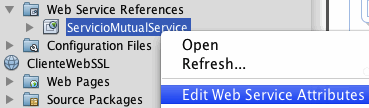
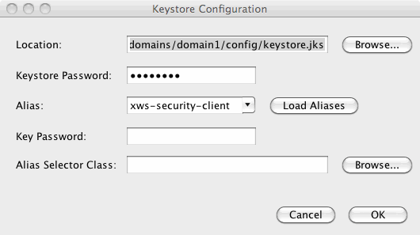

Servicios Web seguros en Metro. Seguridad a nivel de transporte.
- Configurar la seguridad en Netbeans
- Tipos de mecanismos de seguridad en Netbeans
- Configurar la seguridad en el cliente
- Seguridad a nivel de transporte
- Autentificación mediante nombre de usuario y password sobre SSL
- Autentificación mediante certificado digital sobre SSL
- Autentificación mediante SAML SV sobre SSL
- Ejercicios
Como alternativa a Axis 2 y CXF, encontramos Metro, el framework para servicios web desarrollado por Sun. Este framework comprende los estándares de Sun para servicios web Java:
- JAX-WS (Java API for XML Web Services): API de Java para servicios web SOAP básicos.
- JAXB (Java Architecture for XML Binding): API de Java para vincular datos XML y objetos Java.
- WSIT (Web Services Interoperability Technologies): Plataforma Java que da soporte a las extensiones SOAP (WS-*), incluyendo tecnologías para servicios web seguros (WS-Security y WS-Trust).
Metro se ha diseñado entorno a las tecnologías estándar desarrolladas por Sun (JAX-WS, JAXB y WSIT), mientras que Axis2 queda abierto a utilizar diferentes tecnologías. Por ejemplo, en Axis2 para vincular datos Java-XML podemos optar por tecnologías distintas de JAXB. Sin embargo, a pesar de contar con esta flexibilidad, debemos tener en cuenta que si utilizamos JAX-WS y JAXB dentro de Axis2 encontraremos bastantes limitaciones, entre ellas el no poder utilizar WS-Security.
En Axis2 necesitamos instalar módulos adicionales para utilizar las tecnologías de segunda generación (WS-*), mientras que el propio motor de Metro ya integra a todas ellas. Esto hace a Metro más fácil de configurar, pero menos flexible.
En cuanto al despliegue, los servicios web Axis2 se instalan como módulos independientes (AAR) dentro de la aplicación web de Axis2, mientras que en Metro debemos crear nuestro propio módulo web (WAR) que incluya el servicio. Si desplegamos a un servidor distinto a Glassfish deberemos incluir las librerías de dicha pila dentro de nuestro WAR o en los directorios de librerías comunes del servidor, y además ficheros de configuración adicionales.
Aunque Metro puede ser instalado en cualquier servidor de aplicaciones, es especialmente interesante utilizarlo en un entorno Netbeans-Glassfish. Metro forma parte de Glassfish, por lo que no será necesario añadir librerías ni configuración adicional a dicho servidor. Además, si como entorno de desarrollo utilizamos Netbeans tendremos a nuestra disposición una interfaz gráfica para configurar los servicios web, con la que de forma sencilla podremos crear servicios web seguros sin necesidad de tratar con ficheros de configuración directamente. Vamos a centrarnos ahora en esta forma de crear servicios web seguros.
Configurar la seguridad en Netbeans
En Netbeans, toda la configuración de seguridad se realizará a través de la sección Quality of Service (QoS) de la vista de diseño de nuestros servicios:
La forma más inmediata de hacer seguro un servicio es simplemente pulsar sobre la opción Secure Service:
Con esto habremos añadido seguridad a nivel de mensaje mediante el uso de certificados X.509. Pero antes de seguir vamos a ver más a fondo las opciones avanzadas que nos ofrece Netbeans para configurar la seguridad de nuestros servicios. Para ello entramos en la ventana de opciones avanzadas de QoS, pulsando el botón Advanced ... de dicha sección:
En primer lugar vemos que nos permite elegir el mecanismo de seguridad. Además, vemos que por defecto tenemos marcada la casilla Use Development Defaults. Durante el desarrollo la podemos dejar marcada para no tener que preocuparnos de configurar los certificados y usuarios. Si la desmarcamos, según el tipo de servicio, deberemos especificar manualmente la configuración necesaria.
Una forma alternativa, y más directa, de llegar a esta pantalla de edición de atributos del servicio avanzados es pulsar con el botón derecho sobre el nombre de nuestro servicio, en la ventana del proyecto, y eleccionar la opción Edit Web Service Attributes:
Tipos de mecanismos de seguridad en Netbeans
En el apartado anterior hemos visto que Netbeans nos ofrece la posibilidad de seleccionar diferentes tipos de mecanismos de seguridad para los servicios web. Los tipos que encontramos disponibles son los siguientes:
- Username Authentication with Symmetric Key
- Mutual Certificates Security
- Endorsing Certificate
- Transport Security (SSL)
- Message Authentication over SSL
- SAML Authentication over SSL
- SAML Sender Vouches with Certificates
- SAML Holder of Key
- Symmetric Binding with Kerberos Tokens
- STS Issued Token
- STS Issued Token with Service Certificate
- STS Issued Endorsing Token
- STS Issued Supporting Token
Dada la cantidad de tipos disponibles, para poder comprenderlos mejor vamos a clasificarlos según el tipo de seguridad que proporcionan. Una primera clasificación que podemos realizar de forma sencilla consiste en distinguir aquellos que ofrecen seguridad a nivel de transporte y aquellos que implementan seguridad a nivel de mensaje:
| Seguridad a nivel de mensaje | Seguridad a nivel de transporte |
|---|---|
| Username Authentication with Symmetric Key | Transport Security (SSL) |
| Mutual Certificates Security | Message Authentication over SSL |
| Endorsing Certificate | SAML Authentication over SSL |
| SAML Sender Vouches with Certificates | |
| SAML Holder of Key | |
| Symmetric Binding with Kerberos Tokens | |
| STS Issued Token | |
| STS Issued Token with Service Certificate | |
| STS Issued Endorsing Token | |
| STS Issued Supporting Token |
Podemos ver además que existen diferentes formas de autentificación. En todas ellas tenemos un determinado token que nos proporciona información sobre la autentificación (credenciales) y autorización del usuario que está accediendo al servicio. Encontramos los siguientes tipos de formas de autentificación:
- Username token: Consiste en un login y un password.
- X.509 token: Se autentifica al cliente mediante un certificado digital de su propiedad.
- SAML token: Un token SAML (Security Assertion Markup Language) está basado en XML y nos permitirá intercambiar información de autentificación y autorización.
- Kerberos token: Kerberos es un protocolo de seguridad para autentificación desarrollado por el MIT. Además del cliente y el servicio, hay un tercer actor llamado Centro de Distibución de Claves (CDC), a través del cual el cliente se autentifica con el servidor. Cuando el cliente quiere acceder a un servicio, se autentifica en el CDC solicitando acceso a dicho servicio, y el CDC le proporcionará un ticket que le permitirá acceder al servicio. Dicho ticket será el token que utilizaremos para autentificarnos al acceder al servicio.
- STS Issued token: Utiliza tokens de seguridad emitidos por un servicio de tipo STS (que podremos crear mediante Netbeans, creando un nuevo proyecto, y como tipo seleccionando Web Services > Secure Token Service). Los servicios STS nos podrán proporcionar cualquier tipo de token de seguridad, aunque su principal uso será el de proporcionar tokens SAML.
Vamos a centrarnos en aquellos métodos que utilizan autentificación mediante login/password o mediante certificado digital X.509, que son los que hemos visto a lo largo del curso. En el caso de utilizar seguridad a nivel de transporte tenemos las siguientes opciones:
- Transport Security (SSL): Seguridad a nivel de transporte mediante SSL sin autentificación. Esto será equivalente a añadir una restricción de seguridad al descriptor de despliegue (web.xml) en la que se proteja la URL asociada al servicio mediante seguridad declarativa (como si se tratase de una aplicación web ordinaria).
- Message Authentication over SSL: Seguridad a nivel de mensaje con autentificación mediante login/password o certificado digital X.509. Para elegir cuál de estos tokens utilizaremos para autentificar al cliente deberemos pulsar el botón Configure ... junto al desplegable de selección del mecanismo de seguridad.
Respecto a los métodos con seguridad a nivel de mensaje, encontraríamos:
- Mutual Certificates Security: Seguridad a nivel de mensaje con clave asimétrica. En este caso los mensajes de petición se protegeran con el certificado del cliente, y los mensajes de respuesta se protegerán con el certificado del servidor. Tanto cliente como servicio deberán tener sus propios certificados.
- Username Authentication with Symmetric Key: Seguridad a nivel de mensaje con autentificación mediante login/password. El mensaje se protege mediante una clave simétrica, generada en tiempo de ejecución utilizando el certificado del servidor. El cliente se identifica simplemente mediante login y password (por defecto wsit/changeit, si dejamos marcado Use development defaults).
- Endorsing Certificate: Seguridad a nivel de mensaje con autentificación mediante certificado digital X.509. Al igual que el anterior, el mensaje se protege mediante una clave simétrica generada con el certificado del servidor. En los mensajes de petición se adjunta además el certificado del cliente para su autentificación y como respaldo (EndorsingSupportingToken).
Por último, tenemos otro grupo de métodos que utilizan tokens de seguridad de diferentes tipos (SAML, Kerberos, etc) que incluyen información sobre la identidad del usuario y su autorización. Los diferentes mecanismos de seguridad de Netbeans basados en estos tokens son:
- SAML Sender Vouches (SV) with Certificates: En este tipo de seguridad el acceso al servicio se realiza a través de un intermediario, con el que el servicio tiene una relación de confianza. Este intermediario, que actúa de cliente, es conocido para el servicio y accede a él en nombre de un determindo sujeto proporcionando un token SAML SV, en el que indica la información sobre la autentificación y autorización de dicho sujeto.
- SAML Holder of Key (HoK): Este tipo de token SAML nos permite acceder directamente al servicio. En él se incluye una clave que debe habernos proporcionado alguna entidad que nos avale (proveedor de identidades), y estará firmada por dicha entidad. El servicio deberá poder verificar que dicha clave ha sido emitida por una entidad de confianza.
- SAML Authentication over SSL: Utiliza un token de tipo SAML SV sobre seguridad de nivel de transporte.
- Symmetric Binding with Kerberos Tokens: Con este mecanismo se utilizan tokens de tipo Kerberos para la autentificación y se genera una clave simétrica mediante el protocolo Kerberos V5 para proporcionar confidencialidad e integridad.
- STS Issued Token: El servicio no confía directamente en el cliente, sin embargo si que confía en los tokens emitidos por el servicio STS, con lo cual se establece una cadena de confianza. El cliente se autentificará con el servicio STS.
- STS Issued Token with Service Certificate: En este caso, además de necesitar un token SAML que proteja (cifrar y firmar) los mensajes enviados por el cliente, se utiliza un certificado del servicio para proteger los mensajes del servidor (clave asimétrica).
- STS Issued Endorsing Token: La protección del mensaje se realiza mediante clave simétrica con el certificado del servidor, y se utiliza el token proporcionado por el STS como respaldo para autentificar al cliente.
- STS Issued Supporting Token: Similar al caso anterior, pero en lugar de utilizarse el token como respaldo (EndorsingSupportingToken), simplemente se adjunta firmado y cifrado (SignedEncryptedSupportingToken).
En los mecanismos de seguridad de la lista anterior basados en tokens SAML no se especifica quién nos ha proporcionado el token, simplemente lo utilizamos para autentificarnos. Este token normalmente nos lo proporcionará un proveedor de identidades como Sun Access Manager o un servicio de tipo STS.
Este último grupo de tokens está enfocado a implementar lo que se conoce como Single Sign-On (SSO). Esto consiste en introducir un tercer actor que actuará como proveedor de identidades. Los clientes podrán autentificarse en este proveedor, que les proporcionará tokens de seguridad que podrán ser utilizados para acceder a múltiples servicios. De esta forma, el cliente podrá acceder mediante una única identidad a todo aquel servicio que confíe en los tokens emitidos por el proveedor de identidades utilizado. Podríamos por ejemplo crear un servicio STS para ser utilizado como proveedor de identidades, y proporcionar tokens SAML a los clientes para que puedan autentificarse en nuestros servicios.
Configurar la seguridad en el cliente
Los servicios web seguros no podrán ser ejecutados por el cliente de prueba de Glassfish, por lo que deberemos desarrollar nuestro propio cliente. Para crearlo, al igual que en cualquier otro tipo de servicio web, podemos o bien especificar la dirección de su documento WSDL, o directamente especificar el proyecto en el que se encuentra definido el servicio al que queremos acceder.
Dado que la especificación de seguridad del servicio se encuentra en su documento WSDL, al generarse el cliente se habrá configurado de forma automática para utilizar el mecanismo de seguridad especificado en el servicio. De esta forma, podremos acceder a la configuración de seguridad del cliente pulsando con el botón derecho sobre la referencia al servicio y seleccionando la opción Edit Web Service Attributes:

Si en el servidor estamos utilizando los valores de configuración por defecto para el desarrollo, en el cliente podemos hacer lo mismo, marcando la casilla Use development defaults. Si no fuese así, deberíamos especificar la configuración necesaria (certificado de usuario, certificados de confianza, nombre de usuario y password, etc).
Una vez configurada la seguridad, añadiremos el código del cliente para invocar el servicio a algún componente de la aplicación (clase Java, JSP, Servlet, EJB, otro servicio web, etc), al igual que haríamos para invocar cualquier otro servicio.
A continuación veremos detalladamente cómo utilizar diferentes tipos de seguridad en los servicios web desarrollados con Netbeans.
Nos interesará ver los mensajes SOAP que se utilizan para invocar el servicio en cada caso. Para hacer esto lo más sencillo es activar en Glassfish la propiedad que nos permite volcar los mensajes HTTP en la consola. Para activar esta opción debemos entrar en la consola de administración de Glassfish (Services > Servers > Glassfish v3 Domain > View Admin Console):
Una vez dentro de la consola nos logueamos, vamos a Enterprise Server > Propiedades del sistema, y agregamos la propiedad com.sun.xml.ws.transport.http.HttpAdapter.dump con valor true:
Seguridad a nivel de transporte
Comenzaremos viendo cómo crear servicios con seguridad a nivel de transporte. El caso más básico es aquel en el que utilizamos SSL para la protección de los mensajes y no incluimos información de autentificación. En primer lugar deberemos crear un nuevo proyecto web, y dentro de él un servicio al que llamaremos ServicioSSL. Vamos a implementar un servicio sencillo que simplemente nos devuelva una cadena de texto fija:
@WebService()
public class ServicioSSL {
@WebMethod(operationName = "consulta")
public String consulta() {
return "Accediendo a servicio SSL";
}
}
Ahora pulsaremos con el botón derecho sobre el nombre del servicio en la ventana del proyecto y seleccionaremos Edit Web Service Attributes. En la pantalla que nos aparecerá activaremos la casilla Secure Service y en el cuadro desplegable seleccionaremos como mecanismo de seguridad Transport Security (SSL).
Resulta interesante ver el efecto que tiene esta configuración en el fichero XML de configuración de los servicios WSIT. Este documento podemos encontrarlo en el directorio Web Pages/WEB-INF/ del proyecto y se llamará wsit-nombreservicio.xml. En él se muestra el documento WSDL que describe nuestro servicio (en ocasiones algún elemento del dicho WSDL será privado, sólo para uso del servicio como configuración, y por lo tanto no será visible en el WSDL que se haga público). El WSDL que se habrá generado de nuestro servicio será:
<definitions
xmlns="http://schemas.xmlsoap.org/wsdl/"
xmlns:wsdl="http://schemas.xmlsoap.org/wsdl/"
xmlns:xsd="http://www.w3.org/2001/XMLSchema"
xmlns:soap="http://schemas.xmlsoap.org/wsdl/soap/"
name="ServicioSSLService"
targetNamespace="http://ssl.sws.jtech.ua.es/"
xmlns:tns="http://ssl.sws.jtech.ua.es/"
xmlns:wsp="http://www.w3.org/ns/ws-policy"
...>
<message name="consulta"/>
<message name="consultaResponse"/>
<portType name="ServicioSSL">
<operation name="consulta">
<input message="tns:consulta"/>
<output message="tns:consultaResponse"/>
</operation>
</portType>
<binding name="ServicioSSLPortBinding" type="tns:ServicioSSL">
<wsp:PolicyReference URI="#ServicioSSLPortBindingPolicy"/>
<operation name="consulta">
<input></input>
<output></output>
</operation>
</binding>
<service name="ServicioSSLService">
<port name="ServicioSSLPort"
binding="tns:ServicioSSLPortBinding"/>
</service>
<wsp:Policy wsu:Id="ServicioSSLPortBindingPolicy">
<wsp:ExactlyOne>
<wsp:All>
<wsam:Addressing wsp:Optional="false"/>
<sp:TransportBinding>
<wsp:Policy>
<sp:TransportToken>
<wsp:Policy>
<sp:HttpsToken
RequireClientCertificate="false"/>
</wsp:Policy>
</sp:TransportToken>
<sp:Layout>
<wsp:Policy>
<sp:Lax/>
</wsp:Policy>
</sp:Layout>
<sp:IncludeTimestamp/>
<sp:AlgorithmSuite>
<wsp:Policy>
<sp:Basic128/>
</wsp:Policy>
</sp:AlgorithmSuite>
</wsp:Policy>
</sp:TransportBinding>
<sp:Wss10/>
</wsp:All>
</wsp:ExactlyOne>
</wsp:Policy>
</definitions>
Mostramos en negrita los elementos destacados que podemos encontrar. Podemos ver que se define una política que hace referencia a todo el servicio (se referencia directamente dentro del bloque binding). En esta política se especifica la aserción TransportBinding, con la cual se indica que al servicio se puede acceder mediante seguridad a nivel de transporte.
Como alternativa podríamos haber creado un servicio web ordinario y haberlo protegido mediante seguridad declarativa en el fichero web.xml, como cualquier aplicación web, pero de esa forma no habría quedado indicado en el contrato del servicio (documento WSDL) que es necesario acceder a él mediante SSL.
Si entramos de nuevo en la pantalla de edición de los atributos del servicio, podemos ver que junto al desplegable con el mecanismo de seguridad seleccionado tenemos un botón Configure ..., con el que podemos configurar diferentes aspectos del mecanismo activo. Si entramos en dicha configuración, veremos que en este caso la única opción que podemos activar es Requite Client Certificate:
Si la activamos, lo único que cambiará en el WSDL es el siguiente fragmento:
...
<sp:TransportToken>
<wsp:Policy>
<sp:HttpsToken RequireClientCertificate="true"/>
</wsp:Policy>
</sp:TransportToken>
...
Esto nos obligaría a que el cliente tenga también su propio certificado para establecer la conexión segura. Vamos a dejar dicha opción deshabilitada para empezar con el caso más sencillo.
Una vez hemos terminado de configurar el servicio, vamos a desplegarlo y a crear un cliente para probarlo (recordamos que el cliente de pruebas de Netbeans no funciona para servicios web seguros).
Cliente gestionado por el servidor mediante inyección
Vamos a comenzar creando un cliente dentro de una aplicación web que se ejecute en un servidor de aplicaciones. Para ello creamos un nuevo proyecto de aplicación web Java ClienteWebSSL, y en ella añadimos la referencia al servicio.
Cuando utilicemos SSL, al generar el cliente deberemos utilizar como URL del documento WSDL la URL segura (https), y además con el nombre de host real (no localhost). Por ejemplo, podría ser algo como https://localhost:8181/ServicioSSL/ServicioSSLService?wsdl. Al introducir esta dirección y pulsar Finish nos preguntará si aceptamos el certificado del servidor, a lo que deberemos responder de forma afirmativa.
Crearemos un servlet dentro de nuestro proyecto, en el que añadiremos la llamada a la operación del servicio. Podemos aprovechar el código de prueba que Netbeans crea por defecto dentro del servlet, y dentro de este código añadir la llamada al servicio arrastrando la operación que queremos invocar desde el explorador del proyecto. Tendremos algo como lo siguiente:
out.println("<body>");
out.println("<h1>Servlet ClienteSSLServlet at " +
request.getContextPath () + "</h1>");
try { // Call Web Service Operation
es.ua.jtech.sws.ssl.ServicioSSL port =
service.getServicioSSLPort();
// TODO process result here
java.lang.String result = port.consulta();
out.println("Result = "+result);
} catch (Exception ex) {
// TODO handle custom exceptions here
}
out.println("</body>");
out.println("</html>");
Si ejecutamos este servlet deberemos ver en él un mensaje Result = Accediendo a servicio SSL. Si no vemos nada posiblemente se deba a que ha ocurrido algún error en la invocación al servicio. Para conocer los detalles del error sería recomendable imprimir la traza de la excepción en el catch del fragmento de código anterior.
Cliente en una aplicación web sin inyección
En el código del apartado anterior el objeto service se nos proporciona mediante inyección. Esto será así siempre que creemos el cliente dentro de un componente gestionado por el servidor (servlets, EJBs, servicios web). Sin embargo, si creamos el servicio sobre una clase Java ordinaria, o por ejemplo sobre un JSP, la inyección no se podrá realizar, y por lo tanto el cliente se deberá instanciar directamente mediante código Java. Por ejemplo, si añadimos una llamada al servicio sobre el JSP que tenemos por defecto en nuestra aplicación, veremos algo así como:
<body>
<h1>Hello World!</h1>
<%-- start web service invocation --%><hr/>
<%
try {
es.ua.jtech.sws.ssl.ServicioSSLService service =
new es.ua.jtech.sws.ssl.ServicioSSLService();
es.ua.jtech.sws.ssl.ServicioSSL port =
service.getServicioSSLPort();
// TODO process result here
java.lang.String result = port.consulta();
out.println("Result = "+result);
} catch (Exception ex) {
// TODO handle custom exceptions here
}
%>
<%-- end web service invocation --%><hr/>
</body>
Este código lo añade automáticamente Netbeans, sin embargo, si lo probamos veremos que no funciona. Esto es debido a que cuando utilizamos una dirección con protocolo https para crear el cliente, el stub no se genera correctamente. Para solucionar este problema lo único que deberemos hacer es especificar manualmente la dirección del WSDL al instanciar el servicio:
es.ua.jtech.sws.ssl.ServicioSSLService service =
new es.ua.jtech.sws.ssl.ServicioSSLService(new java.net.URL(
"https://localhost:8181/ServicioSSL/ServicioSSLService?wsdl"));
Con este cambio el cliente funcionará correctamente sin necesitar crearlo mediante inyección.
Cliente independiente
Vamos ahora a crear un servicio en una aplicación Java independiente, que no estará dentro de un servidor de aplicaciones. En este caso la principal dificultad radica en que ya no podremos contar con los almacenes de certificados configurados en el servidor, sino que tendremos que configurarlos nosotros manualmente.
Crearemos una nueva aplicación Java en Netbeans con el nombre ClienteSSL. Dentro de esta aplicación crearemos el cliente del servicio igual que en los pasos anteriores, especificando la dirección segura, y una vez hecho esto añadiremos la llamada al servicio en la clase Main que se habrá creado por defecto, teniendo en cuenta que al igual que en el caso anterior, debemos especificar explícitamente la URL con el documento WSDL al instanciar el servicio:
public static void main(String[] args) {
try { // Call Web Service Operation
es.ua.jtech.sws.ssl.ServicioSSLService service =
new es.ua.jtech.sws.ssl.ServicioSSLService(new URL(
"https://localhost:8181/ServicioSSL/ServicioSSLService?wsdl"));
es.ua.jtech.sws.ssl.ServicioSSL port =
service.getServicioSSLPort();
// TODO process result here
java.lang.String result = port.consulta();
System.out.println("Result = "+result);
} catch (Exception ex) {
// TODO handle custom exceptions here
}
}
Sin embargo, en este caso con esto no es suficiente. Cuando se ejecutaba dentro del servidor web, el propio servidor web contaba con sus almacenes de certificados y de certificados raíz. Sin embargo, un cliente independiente no cuenta con esta información, así que tendremos que especificar los almacenes de certificados de forma manual. Una forma sencilla de hacer esto es indicarlos directamente en el código:
System.setProperty("javax.net.ssl.keyStore",
"$GF_HOME/glassfish/domains/domain1/config/keystore.jks");
System.setProperty("javax.net.ssl.keyStorePassword", "changeit");
System.setProperty("javax.net.ssl.trustStore",
"$GF_HOME/glassfish/domains/domain1/config/cacerts.jks");
System.setProperty("javax.net.ssl.trustStorePassword", "changeit");
Para que el cliente funcione todavía tendremos que realizar un paso más, ya que de momento nuestro cliente únicamente tiene la librería JAX-WS incluida en Java SE 6 y posteriores. Para invocar servicios web seguros se deberán incluir una serie de cabeceras de WS-Security en los mensajes SOAP, y para que esto ocurra deberemos tener las librerías de Metro en nuestro cliente. Una forma sencilla de conseguir esto es pulsar con el botón derecho sobre la referencia a nuestro servicio, y seleccionar la opción Edit Web Service Attributes (de la misma forma que lo hicimos para el servidor). En este caso realmente no tenemos nada que configurar aquí, pero si activamos cualquier casilla de la sección QoS Netbeans añadirá automáticamente las librerías de Metro y los ficheros de configuración necesarios a nuestro proyecto. Después de esto podemos volver a desactivar la casilla para dejar la configuración como estaba.
En cualquiera de los tres clientes que hemos visto los mensajes SOAP utilizados serán los mismos. A continuación mostramos la información más destacada que figura en ellos, especialmente respecto a las cabeceras de seguridad. El mensaje de petición es:
<S:Envelope xmlns:S="http:...">
<S:Header>
...
<wsse:Security S:mustUnderstand="1">
<wsu:Timestamp xmlns:ns15="http://...">
<wsu:Created>2010-05-22T07:58:59Z</wsu:Created>
<wsu:Expires>2010-05-22T08:03:59Z</wsu:Expires>
</wsu:Timestamp>
</wsse:Security>
</S:Header>
<S:Body>
<ns2:consulta xmlns:ns2="http://ssl.sws.jtech.ua.es/"/>
</S:Body>
</S:Envelope>
Y la respuesta que devuelve es:
<S:Envelope xmlns:S="http:...">
<S:Header>
...
<wsse:Security S:mustUnderstand="1">
<wsu:Timestamp xmlns:ns15="http://...">
<wsu:Created>2010-05-22T07:58:59Z</wsu:Created>
<wsu:Expires>2010-05-22T08:03:59Z</wsu:Expires>
</wsu:Timestamp>
</wsse:Security>
</S:Header>
<S:Body>
<ns2:consultaResponse xmlns:ns2="http://ssl.sws.jtech.ua.es/">
<return>Accediendo a servicio SSL</return>
</ns2:consultaResponse>
</S:Body>
</S:Envelope>
En este caso podemos observar que no hay ningún elemento cifrado ni firmado en el mensaje, ya que la seguridad se realiza a nivel de transporte. Lo que si que se incluye como cabecera de seguridad es un timestamp para evitar que un mismo mensaje enviado varias veces produzca la misma firma.
Si en lugar de haber utilizado seguridad a nivel de transporte con WS-Security, simplemente hubiésemos configurado la aplicación web con seguridad declarativa en el web.xml para obligar a que la conexión se realice por SSL, estas cabeceras no se habrían utilizado, y por lo tanto tampoco hubiese sido necesario utilizar Metro para acceder al servicio.
Autentificación mediante nombre de usuario y password sobre SSL
Vamos a pasar a ver cómo crear un servicio que utilice autentificación mediante nombre de usuario y password (UsernameToken) con seguridad a nivel de transporte (SSL), tal como se ha visto en el apartado anterior, para garantizar la confidencialidad e integridad de los datos transmitidos.
Crearemos un nuevo servicio al que llamaremos ServicioSSLUsername. En él devolveremos una cadena de texto como en el caso anterior, pero ahora indicando el nombre del usuario con el que nos hemos autentificado (Principal). Para poder obtener este dato desde nuestro servicio deberemos inyectarle una propiedad WebServiceContext. El código quedará como se muestra a continuación:
public class ServicioSSLUsername {
@Resource
private WebServiceContext context;
@WebMethod(operationName = "consulta")
public String consulta() {
return "Accediendo como " +
context.getUserPrincipal().getName();
}
}
Ahora deberemos configurar el servicio para que solicite autentificación mediante nombre de usuario sobre SSL. Para ello entramos en la ventana de atributos del servicio y seleccionamos Message Authentication over SSL. Dejaremos por el momento la casilla Use Development Defaults activada. Esto nos obligará a crear un usuario con el que acceder al servicio en el realm file de Glassfish, que es el realm que utiliza por defecto. Para hacer esto, dentro de la consola de administración de Glassfish, entramos en Configuración > Seguridad > Dominios > file, y pulsamos sobre el botón Administrar usuarios. Aunque el usuario que Netbeans espera por defecto es wsit/changeit, nosotros crearemos un usuario con login y password ayto/ayto.
Con esto podemos consultar el WSDL generado para el servicio en el fichero de configuración de WSIT. Los cambios que podemos observar sobre el anterior, en el que no teníamos autentificación, son los siguientes:
<wsp:Policy wsu:Id="ServicioSSLUsernamePortBindingPolicy">
<wsp:ExactlyOne>
<wsp:All>
...
<sp:Wss10/>
<sp:SignedEncryptedSupportingTokens>
<wsp:Policy>
<sp:UsernameToken sp:IncludeToken=
"http://.../IncludeToken/AlwaysToRecipient">
<wsp:Policy>
<sp:WssUsernameToken10/>
</wsp:Policy>
</sp:UsernameToken>
</wsp:Policy>
</sp:SignedEncryptedSupportingTokens>
</wsp:All>
</wsp:ExactlyOne>
</wsp:Policy>
Podemos ver que se ha añadido un token de tipo UsernameToken cifrado y firmado al mensaje. Este token se incluirá en todos los mensajes del cliente al servicio (recipent).
Crearemos ahora un cliente siguiendo el mismo procedimiento que en el caso anterior. En primer lugar lo haremos sobre la aplicación web por inyección. Una vez creada la referencia al servicio, tendremos que entrar en la ventana para editar sus atributos, ya que es imprescindible configurar el nombre de usuario y password con los que vamos a conectar:

En este caso no podemos marcar Use development default, ya que el nombre que hemos dado de alta en Glassfish no es el que Netbeans considera como valor por defecto. Simplemente introduciremos ayto/ayto como nombre de usuario y password, dejando seleccionada en Authentication credentials la opción Static.
Introducimos la llamada al servicio en el servlet, al igual que hicimos en el caso anterior, y al ejecutarlo deberemos obtener el mensaje Result = Accediendo como ayto.
A continuación veremos cómo podemos personalizar la forma en la que se realiza la autentificación, tanto en el lado del cliente como del servidor.
Autentificar con otro realm
Hemos visto hasta ahora cómo autentificar utilizando el realm file. Sin embargo, es posible que nos interese utilizar otro realm, como por ejemplo uno que obtenga los usuarios de una base de datos. El problema que encontramos es que en los servicios web no podemos configurar el realm que utilizan, por lo que tendremos que optar por otras alternativas.
La forma más sencilla de cambiar el realm utilizado por los servicios web es cambiar el realm por defecto de Glassfish. Los servicios web siempre accederán al realm que hayamos configurado por defecto en el servidor, así que cambiando esta configuración conseguiremos que los servicios web se autentifiquen con el realm que nos interese.
Para cambiar el realm por defecto en Glassfish, deberemos entrar en su consola de administración y en el apartado Configuración > Seguridad. Veremos una opción Dominio predeterminado en la que por defecto estará seleccionado file. Podemos cambiarlo para que el dominio por defecto sea el que a nosotros nos interese.
Sin embargo encontramos otro problema, y es que es posible que tengamos varias aplicaciones en el servidor, y en cada una de ellas queramos utilizar un realm diferente. En este caso ya no nos sirve el poner un realm por defecto para todas las aplicaciones. Para solucionar esto deberemos crear nuestro servicio web dentro de una aplicación enterprise, en lugar de hacerlo en una aplicación web independiente.
Los pasos a seguir son los siguientes:
- Creamos un nuevo proyecto de tipo Enterprise Application en Netbeans (File > New Project ... > Java EE > Enterprise Application).
- En el asistente podemos desmarcar la opción de crear módulo EJB, ya que sólo necesitamos el módulo web donde crear el servicio.
- En el proyecto enterprise seleccionamos File > New File ... > GlassFish > GlassFish Deployment Descriptor (se llamará sun-application.xml).
- En dicho descriptor configuramos el realm que utilizará la aplicación:
<sun-application>
<realm>usuarios</realm>
</sun-application>
Ahora todos los servicios que creemos dentro de módulos de dicha aplicación EAR utilizarán el realm especificado.
Autentificación programada en el servidor
En el punto anterior hemos visto cómo utilizar los realms de Glassfish para autentificar a los usuarios, sin embargo es posible que nos interese personalizar la forma en la que realizamos la autentificación. Vamos a ver ahora la forma de implementar autentificación programada en el servicio, que nos permita especificar en el código la forma en la que se validan los credenciales del usuario.
Si observamos la pantalla con los atributos del servicio, y desmarcamos la casilla Use development defaults, podremos ver que tenemos disponible un botón en el que configurar Validators .... Estos Validators son clases Java que nosotros podemos crear, en las que se implementa la forma de validar los credenciales del usuario.
En la pantalla de configuración de Validators podemos ver que uno de ellos es el de tipo Username, con el que podremos verificar el login y password que nos llegue desde el cliente.
Una posible implementación para este validator es la siguiente:
public class LoginValidator implements
PasswordValidationCallback.PasswordValidator {
public boolean validate(
PasswordValidationCallback.Request request)
throws PasswordValidationCallback.PasswordValidationException {
PasswordValidationCallback.PlainTextPasswordRequest
plainTextRequest =
(PasswordValidationCallback.PlainTextPasswordRequest) request;
if ("pepe".equals(plainTextRequest.getUsername()) &&
"pepe".equals(plainTextRequest.getPassword())) {
return true;
}
return false;
}
}
Esta es una forma sencilla de implementar la verificación del login y password. Sin embargo, dado que Glassfish ya implementa su propio validator que comprueba los usuarios en el realm definido por defecto, el servidor de aplicaciones ignorará cualquier validator que especifiquemos. No obstante, en otros servidores de aplicaciones si que podríamos utilizar este mecanismo.
Si queremos implementar autentificación programada en Glassfish, deberemos optar por otra vía. El mecanismo que se utilizará en este servidor de aplicaciones es el de implementar un callback genérico que realice las comprobaciones de seguridad necesarias, como por ejemplo:
public class LoginCallback implements CallbackHandler {
public void handle(Callback[] callbacks)
throws IOException, UnsupportedCallbackException {
for (Callback c : callbacks) {
if (c instanceof NameCallback) {
// Procesar NameCallback
} else if (c instanceof PasswordValidationCallback) {
PasswordValidationCallback pvc =
(PasswordValidationCallback) c;
String usuario = pvc.getUsername();
String password = new String(pvc.getPassword());
if (usuario.equals("pepe") && password.equals("pepe")) {
pvc.setResult(true);
pvc.getSubject().getPrincipals().add(new Principal() {
public String getName() {
return "pepe";
}
});
} else {
pvc.setResult(false);
}
} else if (c instanceof CallerPrincipalCallback) {
// Procesar CallerPrincipalCallback
} else {
throw new UnsupportedCallbackException(c,
"Callback no soportado");
}
}
}
}
Deberemos reemplazar el callback por defecto de Glassfish por nuestro propio callback. Esto lo haremos modificando manualmente el fichero de configuración del servicio (wsit-nombreservicio.xml), y añadiendo:
<wsp:All>
...
<sc:CallbackHandlerConfiguration xmlns:sc=
"http://schemas.sun.com/2006/03/wss/server" >
<sc:CallbackHandler name="jmacCallbackHandler"
classname="es.ua.jtech.sws.callback.LoginCallback" />
</sc:CallbackHandlerConfiguration>
</wsp:All>
Con esta configuración podremos programar la forma exacta en la que se realizarán las comprobaciones de seguridad necesarias. Ahora pasaremos a ver cómo personalizar la forma en la que se realiza la autentificación en el lado del cliente.
Autentificación dinámica en el cliente
Hasta el momento hemos visto cómo realizar una autentificación estática en el cliente. Sin embargo, en muchas ocasiones no nos interesa que esto sea así, ya que esto nos obliga a incluir el login y password con el que accedemos en un fichero de configuración del cliente, lo cual puede suponer un problema de seguridad.
Si nos fijamos en el alguno de los clientes con autentificación estática que hemos creado, veremos que tienen asociado un fichero de configuración dentro del directorio Source Packages/META-INF, con el nombre nombreservicio.xml. En este fichero podemos encontrar un fragmento de código como el siguiente:
<sc:CallbackHandlerConfiguration wspp:visibility="private"> <sc:CallbackHandler default="ayto" name="usernameHandler"/> <sc:CallbackHandler default="ayto" name="passwordHandler"/> </sc:CallbackHandlerConfiguration>
Como podemos ver, los logins y passwords especificados de forma estática quedan perfectamente visibles en este fichero de configuración. En una aplicación web instalada en nuestro propio servidor esto no resulta demasiado problemático, pero si vamos a distribuir una aplicación Java independiente deberíamos evitar que en uno de los ficheros que incluya se puedan ver estos datos.
Para solucionar este problema podemos optar por realizar una autentificación dinámica, en la que en lugar de proporcionar directamente los valores de login y password, especificaremos un CallbackHandler que nos los proporcione. Este CallbackHandler sigue la misma estructura que el visto anteriormente para el servidor:
public class LoginCallback implements CallbackHandler {
public void handle(Callback[] callbacks) throws IOException,
UnsupportedCallbackException {
for(Callback c: callbacks) {
if(c instanceof NameCallback) {
NameCallback uc = (NameCallback)c;
uc.setName("pepe");
} else if(c instanceof PasswordCallback) {
PasswordCallback pc = (PasswordCallback)c;
pc.setPassword("pepe".toCharArray());
}
}
}
}
Introduciremos la clase anterior en el cliente Java independiente (no en la aplicación web), y una vez hecho esto entraremos en la pantalla de configuración de los atributos del cliente del servicio, seleccionaremos el método Dynamic para obtener los credenciales de autentificación, y especificaremos la clase anterior como callback tanto para el nombre de usuario como para el password.
Podríamos hacer que el callback obtenga los datos de una base de datos, o se los solicite al usuario en la consola.
Finalmente, vamos a analizar los mensajes SOAP que se han utilizado para invocar los servicio anteriores. En el caso de la petición tenemos:
<S:Envelope xmlns:S="http://...">
<S:Header>
...
<wsse:Security S:mustUnderstand="1">
<wsu:Timestamp xmlns:ns15="http://...">
<wsu:Created>2010-05-22T10:07:32Z</wsu:Created>
<wsu:Expires>2010-05-22T10:12:32Z</wsu:Expires>
</wsu:Timestamp>
<wsse:UsernameToken xmlns:ns15="http://...">
<wsse:Username>ayto</wsse:Username>
<wsse:Password Type="http://...#PasswordText">
ayto
</wsse:Password>
</wsse:UsernameToken>
</wsse:Security>
</S:Header>
<S:Body>
<ns2:consulta xmlns:ns2="http://username.ssl.sws.jtech.ua.es/"/>
</S:Body>
</S:Envelope>
Podemos ver que en este caso se ha añadido a la cabecera de seguridad el elemento UsernameToken con los credenciales del usuario. En el WSDL vimos que se especificaba que este token debía ser firmado y cifrado, pero esto se realizará a nivel de transporte, por lo que al recibir el mensaje en nuestro nodo podemos ver todos los datos sin cifrar.
En cuando a la respuesta, tendremos algo como lo siguiente:
<S:Envelope xmlns:S="http://...">
<S:Header>
...
<wsse:Security S:mustUnderstand="1">
<wsu:Timestamp xmlns:ns15="http://...">
<wsu:Created>2010-05-22T10:07:32Z</wsu:Created>
<wsu:Expires>2010-05-22T10:12:32Z</wsu:Expires>
</wsu:Timestamp>
</wsse:Security>
</S:Header>
<S:Body>
<ns2:consultaResponse xmlns:ns2="http://.../">
<return>Accediendo como ayto</return>
</ns2:consultaResponse>
</S:Body>
</S:Envelope>
En este caso se mantiene igual que en el caso anterior.
Autentificación mediante certificado digital sobre SSL
En el punto anterior hemos visto cómo utilizar un nombre de usuario y password para autentifica al cliente. Vamos a ver ahora cómo realizar esta autentificación mediante un certificado digital X.509 propiedad del cliente, manteniendo seguridad a nivel de transporte para garantizar la confidencialidad e integridad.
Podremos hacer esto manteniendo el mismo tipo de seguridad que en el caso anterior (Message Authentication over SSL). Crearemos un nuevo servicio al que llamaremos ServicioSSLCert igual que en el caso anterior, especificando dicho mecanismo de seguridad. Pero en este caso, una vez seleccionado el tipo de seguridad en la pantalla de edición de atributos del servicio, pulsaremos sobre el botón Configure ...
En la pantalla de configuración cambiaremos el Authentication Token a X509. Con esto ahora el servicio esperará recibir de la petición del cliente un certificado con el que autentificarlo. En el WSDL esto habrá quedado especificado de la siguiente forma:
<wsp:Policy wsu:Id="ServicioSSLCertPortBindingPolicy">
<wsp:ExactlyOne>
<wsp:All>
...
<sp:Wss10/>
<sp:EndorsingSupportingTokens>
<wsp:Policy>
<sp:X509Token sp:IncludeToken=
"http://.../IncludeToken/AlwaysToRecipient">
<wsp:Policy>
<sp:WssX509V3Token10/>
</wsp:Policy>
</sp:X509Token>
</wsp:Policy>
</sp:EndorsingSupportingTokens>
</wsp:All>
</wsp:ExactlyOne>
</wsp:Policy>
En este caso el token de autentificación se incluye como EndorsingSupportingTokens. Es decir, se utilizará para firmar parte del mensaje de petición, a parte de la firma realizada a nivel de transporte. Podemos ver también que el token se incluirá en todos los mensajes del cliente al servidor (recipent).
Dentro de nuestro servicio podemos obtener los datos del certificado con el mismo método getUserPrincipal():
public class ServicioSSLCert {
@Resource
private WebServiceContext context;
@WebMethod(operationName = "consulta")
public String consulta() {
return "Accediendo con certificado " +
context.getUserPrincipal().getName();
}
}
Podemos crear un cliente de la misma forma que en el caso anterior. Vamos a crear un cliente en la aplicación web y por el momento dejaremos marcado tanto en cliente como en servidor la casilla Use development defaults. Al ejecutar el cliente veremos un mensaje como Result = Accediendo con certificado CN=xwssecurityserver,OU=SUN,O=Internet Widgits Pty Ltd,ST=Some-State,C=AU.
<S:Envelope xmlns:S="http://...">
<S:Header>
...
<wsse:Security S:mustUnderstand="1">
<wsu:Timestamp xmlns:ns17="http://..." wsu:Id="_1">
<wsu:Created>2010-05-23T09:29:57Z</wsu:Created>
<wsu:Expires>2010-05-23T09:34:57Z</wsu:Expires>
</wsu:Timestamp>
<wsse:BinarySecurityToken xmlns:ns17="http://..."
ValueType="...#X509v3" EncodingType="...#Base64Binary"
wsu:Id="uuid_a7d12e65-13dd-44d0-9ba9-43bd3039c472">
MIIDDzCCAnigAwIBAgIBAjANBgkqhkiG9w0BAQQFADBOMQ
swCQYDVQQGEwJBVTETMBEGA1UECBMKU29tZS1TdGF0ZTEM
MAoGA1UEChMDU1VOMQwwCgYDVQQLEwNKV1MxDjAMBgNVBA
MTBVNVTkNBMB4XDTA3MDMxMjEwMTgwNVoXDTE3MDMwOTEw
MTgwNVowbzELMAkGA1UEBhMCQVUxEzARBgNVBAgTClNvbW
UtU3RhdGUxITAfBgNVBAoTGEludGVybmV0IFdpZGdpdHMg
UHR5IEx0ZDEMMAoGA1UECxMDU1VOMRowGAYDVQQDExF4d3
NzZWN1cml0eXNlcnZlcjCBnzANBgkqhkiG9w0BAQEFAAOB
jQAwgYkCgYEAv11fD4vbn2E+RpKgPkDFYzorrGsGqpdsms
Z3wGewLhSdrDI18Lugs6QcUUTq8dQ17xAWPITQWi0EzXpU
hdFTQAi4eiLJnV2SVirz4iyCqbZCzn0gCJxFcJ//+BYwIu
WdTLrfya14+47gKBhFnNSZxmpjZlahf6105AZMTgt05BMC
AwEAAaOB2zCB2DAJBgNVHRMEAjAAMCwGCWCGSAGG+EIBDQ
QfFh1PcGVuU1NMIEdlbmVyYXRlZCBDZXJ0aWZpY2F0ZTAd
BgNVHQ4EFgQUdVE29ysyFW/iD1la3ddePzM6IWowfgYDVR
0jBHcwdYAUZ7plxs6VyOOOTSFyojDV0/YYjJWhUqRQME4x
CzAJBgNVBAYTAkFVMRMwEQYDVQQIEwpTb21lLVN0YXRlMQ
wwCgYDVQQKEwNTVU4xDDAKBgNVBAsTA0pXUzEOMAwGA1UE
AxMFU1VOQ0GCCQDbHkJaq6KijjANBgkqhkiG9w0BAQQFAA
OBgQBWpPzVlkGUGarWc0ghob52gvWWjYoQ/2b1zHqUcLGt
1fGKcwS0m23PMCWjwcTv4AKz4ZAtymK9xe9UOoMkJt+N9S
uOajGzKvpf7eXaC5d+CcGmIhRDL+8Exz9DVqLDi8MVHd8o
Mg/WeP2c0q0TCDxXmATn6n9hC0abODh8cLUh7Q==
</wsse:BinarySecurityToken>
<ds:Signature xmlns:ns17="http://..." Id="_2">
<ds:SignedInfo>
<ds:CanonicalizationMethod Algorithm=
"http://www.w3.org/2001/10/xml-exc-c14n#">
<exc14n:InclusiveNamespaces PrefixList="wsse S" />
</ds:CanonicalizationMethod>
<ds:SignatureMethod Algorithm=
"http://www.w3.org/2000/09/xmldsig#rsa-sha1" />
<ds:Reference URI="#_1">
<ds:Transforms>
<ds:Transform Algorithm=
"http://www.w3.org/2001/10/xml-exc-c14n#">
<exc14n:InclusiveNamespaces
PrefixList="wsu wsse S" />
</ds:Transform>
</ds:Transforms>
<ds:DigestMethod Algorithm=
"http://www.w3.org/2000/09/xmldsig#sha1" />
<ds:DigestValue>
F559PJhB0KvFgyZfwB2OZnkAW7Y=
</ds:DigestValue>
</ds:Reference>
</ds:SignedInfo>
<ds:SignatureValue>
Ps6f+1ByciO357TAvXZu9hO1KmiNenQTi1K66RZRrL4jBf
sOaeYAdZhdK19DS92t4kL3RDgZTXdbrRQxdkqoU4jKWhx6
StRCur57Ux4L046U9MgEyla6BTzhe0UcM3FuLynHwWmsnQ
WK5sHz3SdiDpvJTilvj31QMLfmu0vZI28=
</ds:SignatureValue>
<ds:KeyInfo>
<wsse:SecurityTokenReference>
<wsse:Reference URI=
"#uuid_a7d12e65-13dd-44d0-9ba9-43bd3039c472"
ValueType="...#X509v3"/>
</wsse:SecurityTokenReference>
</ds:KeyInfo>
</ds:Signature>
</wsse:Security>
</S:Header>
<S:Body>
<ns2:consulta xmlns:ns2="http://cert.ssl.sws.jtech.ua.es/"/>
</S:Body>
</S:Envelope>
Lo primero que observamos en el mensaje de petición SOAP es que ahora se adjunta el certificado digital del cliente como datos binarios codificados en base64. Además, en el mensaje tenemos una firma de respaldo (además el mensaje completo se cifrará y se firmará durante el transporte). Si observamos el contenido de la firma, vemos que se ha firmado el elemento con identificado _1, que corresponde al timestamp, y para firmarlo se ha utilizado el certificado adjunto, con identificador uuid_a7d12e65-13dd-44d0-9ba9-43bd3039c472.
A continuación mostramos el mensaje de respuesta SOAP, que sigue siendo igual que en los casos anteriores:
<S:Envelope xmlns:S="http://...">
<S:Header>
...
<wsse:Security S:mustUnderstand="1">
<wsu:Timestamp xmlns:ns15="http://..." wsu:Id="_1">
<wsu:Created>2010-05-23T09:29:57Z</wsu:Created>
<wsu:Expires>2010-05-23T09:34:57Z</wsu:Expires>
</wsu:Timestamp>
</wsse:Security>
</S:Header>
<S:Body>
<ns2:consultaResponse xmlns:ns2=
"http://cert.ssl.sws.jtech.ua.es/">
<return>Accediendo con certificado CN=xwssecurityserver,
OU=SUN,O=Internet Widgits Pty Ltd,ST=Some-State,C=AU
</return>
</ns2:consultaResponse>
</S:Body>
</S:Envelope>
Vamos ahora a estudiar cómo personalizar el certificado que el cliente utiliza para autentificarse. Este certificado deberá resultar de confianza para el servidor. Para que esto sea así debería estar firmado por alguno de los certificados raíz a los que tiene acceso el servicio.
En la configuración de Netbeans distinguiremos dos almacenes de certificados:
- Keystore: Certificados X.509 propios. De cada uno se almacena el certificado y la clave privada asociada.
- Truststore: Certificados raíz y certificados de entidades con las que nos comunicamos. En este caso sólo tenemos la clave pública.
Para el tipo de seguridad que estamos utilizando deberemos configurar el truststore en el lado del servidor, y el keystore en el lado del cliente. Para poder cambiar los almacenes utilizados deberemos desmarcar las casillas Use development defaults en la ventana de edición de atributos del servicio, y pulsar sobre los botones Keystore... y Truststore... en cliente y servidor respectivamente.
El password de los dos almacenes incluidos por defecto en Glassfish es changeit. En el caso del Truststore sólo deberemos indicar el fichero en el que está el almacen y el password (podemos dejar los valores por defecto). Respecto al Keystore, deberemos indicar además el alias del certificado que queramos utilizar para autentificarnos. Si la lista de alias apareciese vacía, podemos pulsar el botón Load Aliases para que los cargue del servidor.

Vamos a cambiar el alias del certificado utilizado por el cliente por xwssecurityclient. Si volvemos a ejecutar la aplicación cliente ahora veremos que se ha autentificado utilizando este certificado.
Autentificación mediante SAML SV sobre SSL
Por último vamos a ver cómo utilizar un mecanismo de autentificación mediante tokens de tipo SAML Sender-Vouches (SV) sobre SSL. En este caso cliente y servicio deben mantener de antemano una relación de confianza, y el servidor confiará en la información que figure en los tokens de seguridad que le enviemos.
Entonces, si el servidor ya nos conoce y confía en nosotros, ¿para qué se utilizarán los tokens? Para responder a esta pregunta es necesario aclarar que en este mecanismo de seguridad estaremos accediendo al servicio en nombre de un determinado sujeto. Dicho sujeto deberá autentificarse con nosotros, y una vez confiemos en él, compondremos un token SAML SV con su información y haremos la llamada al servicio en su lugar, proporcionando al servidor dicho token para indicarle en nombre de quién estamos accediendo. Es decir, en este caso el sujeto que quiere invocar el servicio lo hará a través de un intermediario, que es el cliente que vamos a crear en este apartado.
En primer lugar crearemos el servicio que utiliza autentificación mediante SAML SV sobre SSL. Crearemos un nuevo servicio ServicioSSLSaml, y especificaremos como mecanismo de seguridad SAML Authorization over SSL. Para poder analizar el contenido del token SAML en el servicio podemos utilizar un código como el siguiente:
import com.sun.xml.wss.SubjectAccessor;
import com.sun.xml.wss.saml.util.SAMLUtil;
import java.io.CharArrayWriter;
import java.util.Set;
import javax.annotation.Resource;
import javax.jws.WebMethod;
import javax.jws.WebService;
import javax.security.auth.Subject;
import javax.xml.stream.XMLStreamReader;
import javax.xml.transform.Transformer;
import javax.xml.transform.TransformerException;
import javax.xml.transform.TransformerFactory;
import javax.xml.transform.dom.DOMSource;
import javax.xml.transform.stream.StreamResult;
import javax.xml.ws.WebServiceContext;
import org.w3c.dom.Element;
import org.w3c.dom.Node;
@WebService()
public class ServicioSSLSaml {
@Resource
WebServiceContext context;
@WebMethod(operationName = "consulta")
public String consulta() {
Element e = getSAMLAssertion(context);
if(e==null) {
return "No se encuentra ningun token SAML";
} else {
return "Acceso mediante SAML con " + volcarNodoDom(e);
}
}
private static Element getSAMLAssertion(WebServiceContext
context) {
try {
Subject s = SubjectAccessor.getRequesterSubject(context);
Set<Object> set = s.getPublicCredentials();
Element samlAssertion = null;
for (Object obj : set) {
if (obj instanceof XMLStreamReader) {
XMLStreamReader reader = (XMLStreamReader) obj;
samlAssertion = SAMLUtil.createSAMLAssertion(reader);
return samlAssertion;
}
}
} catch (Exception ex) {
return null;
}
return null;
}
private static String volcarNodoDom(Node node) {
try {
CharArrayWriter caw = new CharArrayWriter();
DOMSource ds = new DOMSource(node);
TransformerFactory tf = TransformerFactory.newInstance();
Transformer t = null;
t = tf.newTransformer();
t.transform(ds, new StreamResult(caw));
return caw.toString();
} catch (TransformerException ex) {
return "Error: " + ex.getMessage();
}
}
}
Si introducimos este código directamente en nuestro servicio, y añadimos los imports necesarios, veremos que hay algunos elementos que no consigue importar, ya que Netbeans no tiene visibles las librerías necesarias (fundamentalmente las localizadas en el paquete com.sun.xml.wss). Para solucionar este problema deberemos añadir manualmente las librerías de Metro al proyecto, pero dado que Glassfish ya cuenta con ellas, no deberemos hacer que se empaqueten con el proyecto. Simplemente las utilizaremos para que el proyecto compile.
Para introducir dichas librerías pulsaremos sobre el proyecto con el botón derecho del ratón, y seleccionaremos Properties. Iremos a la sección Libraries, y pulsaremos el botón Add Library ..., para añadir la librería METRO 2.0. Una vez añadida dicha librería, desmarcamos la casilla Package para evitar que se empaquete con nuestro proyecto al desplegarlo. Deberá quedar como se muestra a continuación:
Con esto se podrá compilar y desplegar el proyecto sin problemas. Ahora pasaremos a ver la implementación del cliente. Vamos a crear la referencia al servicio dentro de una aplicación Java independiente, de la misma forma que en casos anteriores. Una vez creado, si entramos en la ventana de edición de atributos del cliente del servicio, y marcamos Use development defaults, veremos que nos crea de forma automática un callback SAML que se encarga de componer los tokens necesarios para acceder al servicio.
Este callback funcionaría correctamente en un cliente web dentro de Glassfish, pero al estar en un cliente independiente tendremos que hacer una pequeña modificación. Deberemos localizar la siguiente línea:
String glassfish_home=System.getProperty("com.sun.aas.installRoot")
Y sustituirla por la ruta donde Glassfiss está instalado, para que así sea capaz de localizar los almacenes de certificados necesarios:
String glassfish_home="/RutaCompleta/NetBeans/sges-v3/glassfish"
Si no tuviésemos Glassfish en la máquina cliente, siempre podríamos especificar directamente en el código la localización de los almacenes.
Ahora al invocar el servicio nos volcará el token SAML recibido
<saml:Assertion xmlns:saml="..."
AssertionID="1275299425926"
IssueInstant="2010-05-31T11:50:25.926+02:00"
Issuer="CN=Assertion Issuer,OU=AI,O=Assertion Issuer,L=Waltham,
ST=MA,C=US" MajorVersion="1" MinorVersion="1">
<saml:Conditions NotBefore="2010-05-31T10:50:25.926+02:00"
NotOnOrAfter="2010-05-31T12:50:25.926+02:00"/>
<saml:AttributeStatement>
<saml:Subject>
<saml:NameIdentifier Format="...:X509SubjectName">
CN=SAML User,OU=SU,O=SAML User,L=Los Angeles,ST=CA,C=US
</saml:NameIdentifier>
<saml:SubjectConfirmation>
<saml:ConfirmationMethod>
urn:oasis:names:tc:SAML:1.0:cm:sender-vouches
</saml:ConfirmationMethod>
</saml:SubjectConfirmation>
</saml:Subject>
<saml:Attribute AttributeName="attribute1"
AttributeNamespace="urn:com:sun:xml:wss:attribute">
<saml:AttributeValue xmlns:ns5="..." ns5:type="ns6:string">
ATTRIBUTE1
</saml:AttributeValue>
</saml:Attribute>
</saml:AttributeStatement>
</saml:Assertion>
Si observamos el código del callback podremos identificar de forma sencilla dónde se ha especificado cada uno de los datos que figura en este token. Podremos modificar manualmente dicho callback para introducir la información necesaria que queramos transmitir al servidor sobre la autentificación y autorización del sujeto en nombre de quien estamos accediendo.
Ejercicios
Servicio web de gestión de multas
Vamos a desarrollar un servicio web con el que los ciudadanos puedan consultar sus multas pendientes. Vamos a utilizar seguridad a nivel de transporte, y autentificación mediante certificados digitales. En los certificados digitales de los ciudadanos, figurará su NIF como CN.
Lo primero que debemos hacer es crear nuevos certificados para dos ciudadanos distintos, con NIF 00000000T y 11111111H. Deberemos crear también una autoridad certificadora con la que firmarlos. Seguiremos el mismo procedimiento que se vió en sesiones anteriores, pero en este caso los introduciremos en los almacenes de certificados de GlassFish (keystore.jks y cacerts.jks).
Crearemos las claves para cada ciudadano en keystore.jks, e importaremos los certificados de los ciudadanos y de la autoridad certificadora tanto en keystore.jks como en cacerts.jks.
El servicio deberá leer el NIF del cliente de su certificado, y buscará en su base de datos la lista de multas asociada a dicho NIF. Para simplificar la implementación se proporcionan las clases necesarias para acceder a la información de las multas en el servicio. También se incluyen en el mismo fichero los certificados ya creados como ayuda.